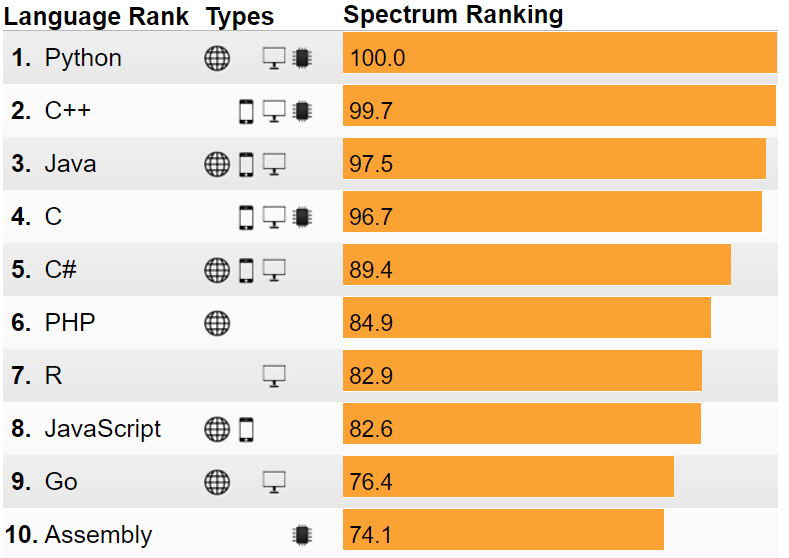

By 天健社技术部
技术部部长张帅、副部长程鉴如、部员陈昕元
名字来源于作者喜欢的名为Monty Python的喜剧团体，简洁、易上手、面向对象、功能强大，在科学计算、机器学习方面应用广泛。与同为科学计算语言的MATLAB相比，具有开源免费的优点。

与C、C++、Java等不同的是，Python可以直接通过命令行执行。
因为Python现成的包很多，所以很多复杂的功能可以只通过几行Python代码来实现。而这个功能可能需要C/C++写几十行甚至几百行才能实现。
Python有Python2和Python3，推荐使用Python3.
真假：bool
数字：int、float（可以使用>, >=, <, <=, ==等来比较大小）
字符串：str，'我是字符串'与"我是字符串"没有区别
最常用==来比较是否相同，使用+来进行字符串拼接，也可以使用>, >=, <, <=等来比较大小
逻辑：and, or
列表：
索引从0开始数起
tj_list=["技术部", "人资部", "活动部", "全媒体中心", "项目部", "公关部", "唐氏之家"]
tj_list.append("天健社")用于添加元素tj_list.insert(0, "天健社")在索引为0的位置添加元素，原先的元素向后移动一个tj_list.pop(0)用于删除索引为0的元素len(tj_list)就是7tj_list[0]就是"技术部"tj_list[-1]就是"唐氏之家""技术部" in tj_list就是True字典：tj_dict={"技术部部长":"张帅", "技术部副部长":"程鉴如"}
tj_dict["技术部部长"]就是"张帅""技术部部长" in tj_dict就是True，但是"张帅" in tj_dict是False赋值：=
注释：# 这里是注释
导入其他包：import requests，from bs4 import BeautifulSoup（可以按Alt+Enter）
if __name__ == '__main__': print("hello, world!") xxxxxxxxxxif __name__ == '__main__': if 2>1: print("我是一个小机灵鬼") else: print("我还不够机灵") xxxxxxxxxxif __name__ == '__main__': lst = ["张帅", "程鉴如", "陈昕元", "张迪"] for x in lst: print(x) xdef myfunction(s): return s+"坏坏"if __name__ == '__main__': lst = ["张帅", "程鉴如", "陈昕元", "张迪"] for x in lst: y = myfunction(x) print(y)一个类别的东西有共同的特点，可以执行相同的操作。
不用U盘，局域网传文件
首先进入要分享的文件所在的文件夹，比如要分享的文件夹是D:\电影，只需
cd /d "D:\电影"（双引号建议加上）ipconfig查看自己的IP地址（Mac需要打ifconfig）python -m http.server（Windows需要关闭防火墙）浏览地址：自己的IP地址:8000（冒号为英文冒号）
IP地址可以通过以下命令查看：
ipconfigifconfig按照我们设置的规则，自动抓取网站信息。
常用requests库模拟网络请求，BeautifulSoup库来解析网页。
使用Chrome浏览器查看Network-XHR(XmlHttpRequests)，用如下代码，将password值修改为自己的密码，运行即可
xxxxxxxxxximport requestsif __name__ == '__main__': username = '151220162' password = 'yourpassword' # 这里填你的密码 login_data = {'username': username, 'password': password} print(requests.post('http://p.nju.edu.cn/portal_io/login', data=login_data)) print("登录完成")打开Chrome浏览器，以p.nju.edu.cn为例，查看修改网页元素
注意class属性可能有多个值
关键点
find_all('img')get('src')源代码
x
import requestsfrom bs4 import BeautifulSoupif __name__ == '__main__': res = requests.get('https://www.douban.com/doulist/240962/') soup = BeautifulSoup(res.text, 'lxml') img_list = soup.find_all('img') cnt = 0 for img in img_list: print(cnt) src = img.get('src') r = requests.get(src) f = open(str(cnt)+'.png', 'wb') f.write(r.content) f.close() cnt = cnt + 1关键点
确保class属性在字典img.parent.parent.attrs中
'class' in img.parent.parent.attrs
确保post在class属性的值列表img.parent.parent.attrs['class']中
'post' in img.parent.parent.attrs['class']
xxxxxxxxxximport requestsfrom bs4 import BeautifulSoupif __name__ == '__main__': res = requests.get('https://www.douban.com/doulist/240962/') soup = BeautifulSoup(res.text, 'lxml') cnt = 0 for img in soup.find_all('img'): if 'class' in img.parent.parent.attrs and 'post' in img.parent.parent.attrs['class']: print(cnt) src = img.get('src') r = requests.get(src) f = open(str(cnt)+'.png', 'wb') f.write(r.content) f.close() cnt = cnt + 1最后放一个抓取热门电影的热门评论的代码，有兴趣的可以直接运行一下试试
x
import codecsimport osimport reimport requestsfrom bs4 import BeautifulSoup, Tagif __name__ == '__main__': moviesDir = 'movie-comments/' if os.path.isdir(moviesDir): # moviesDir这个目录已经存在 print(moviesDir+"目录已存在！") exit() else: # 不存在则新建一个 os.mkdir(moviesDir) # 浏览器请求头（大部分网站没有这个请求头会报错、请务必加上哦） headers = {'User-Agent': "Mozilla/5.0 (Windows NT 6.1; WOW64) AppleWebKit/537.1 (KHTML, like Gecko)\ Chrome/22.0.1207.1 Safari/537.1"} begin_url = "https://www.douban.com/doulist/240962/" res = requests.get(begin_url, headers=headers) soup = BeautifulSoup(res.text, 'lxml') movieItems = soup.find(id='content').find_all("div", class_='doulist-item') for i, movieItem in enumerate(movieItems): movieA = movieItem.find("div", class_='bd doulist-subject').find('div', class_='title').find('a') movieName = movieA.get_text().strip() movieHref = movieA.get('href') print(str(i)+movieName+":"+movieHref) commentRes = requests.get(movieHref, headers=headers) commentSoup = BeautifulSoup(commentRes.text, 'lxml') comments = commentSoup.find('section', class_='reviews mod movie-content').find('div', class_='review-list') for comment_ in comments.contents: comment = comment_.find("div") if isinstance(comment, Tag): commentItem = comment.find('div', class_='main-bd').find('h2').find('a') commentTitle = commentItem.get_text() commentHref = commentItem.get('href') print("\t"+commentTitle+":"+commentHref) cmtRes = requests.get(commentHref, headers=headers) cmtSoup = BeautifulSoup(cmtRes.text, 'lxml') cmtText = cmtSoup.find(id='link-report') # print(cmtText.get_text()) movieName = re.sub(r"[/\\:*?\"<>|]", " ", movieName) # 将所有非法字符替换为空格 dirName = moviesDir + str(i) + movieName+"/" if not os.path.isdir(dirName): # 若目录不存在，则创建一个 os.mkdir(dirName) fileName = commentTitle+'.txt' fileName = re.sub(r"[/\\:*?\"<>|]", " ", fileName) # 将所有非法字符替换为空格 with codecs.open(dirName+fileName, 'w', encoding='utf-8') as f: f.write(cmtText.get_text()) # break # break